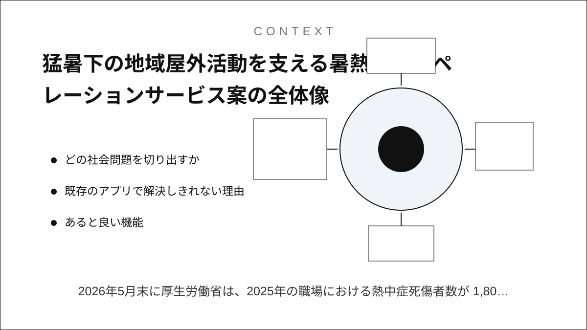
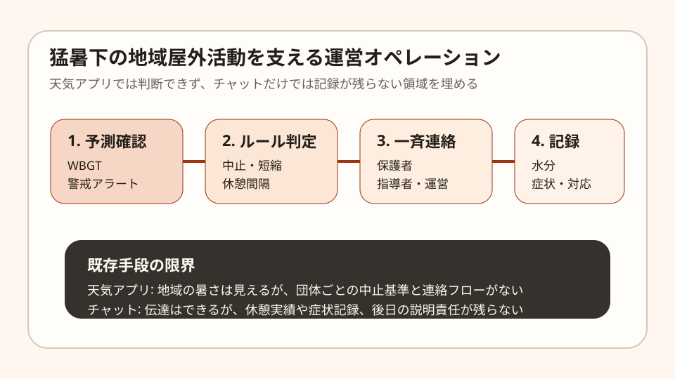
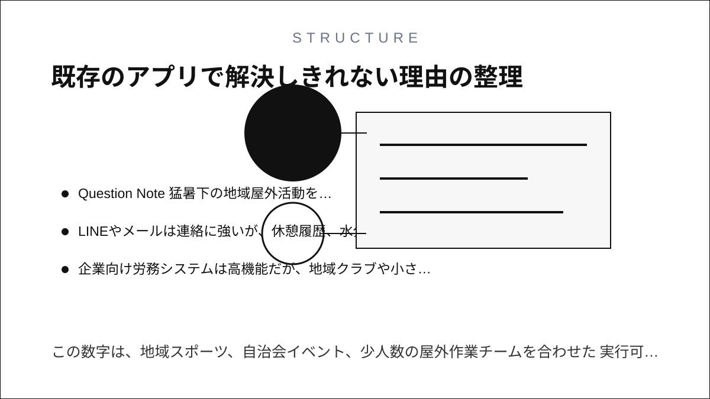
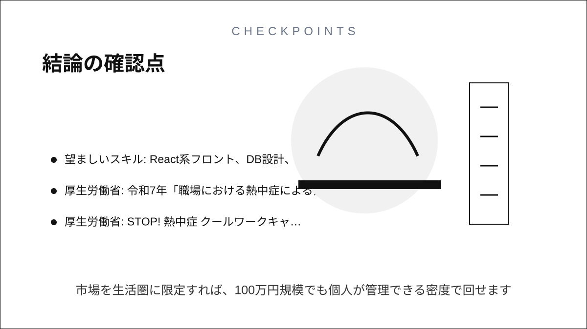

Question Note
猛暑下の地域屋外活動を支える暑熱対策オペレーションサービス案


2026年5月末に厚生労働省は、2025年の職場における熱中症死傷者数が 1,803人で統計開始以来最多になったと公表しました。気象庁も、熱中症警戒アラートと 暑さ指数(WBGT)の活用を前提にした情報提供を続けています。

ただし、地域スポーツクラブ、自治会イベント、屋外学習会、少人数の現場作業では、 天気を見ること自体より、誰がいつ中止判断し、誰に伝え、どう記録するかが弱いままです。 ここに、個人でも扱える小規模な運営支援サービスの余地があります。
どの社会問題を切り出すか
大企業向けの安全管理システムは既にありますが、地域の小規模団体はそこまでの予算がありません。 一方で、暑さリスクはむしろ現場責任者が兼務で回している小さな運営に集中します。
| 現場 | 困りごと | 既存手段の限界 |
|---|---|---|
| 地域スポーツクラブ | 中止や短縮の判断が指導者ごとにぶれる。 | 天気アプリは見るだけで、団体の基準を実行できない。 |
| 自治会イベント | 高齢参加者の休憩や給水の声掛けが属人化する。 | 紙のチェック表は共有しづらく、当日の更新が遅い。 |
| 少人数の屋外作業 | 休憩実績や症状記録が後から追えない。 | チャットは連絡向きだが、監査や振り返りの記録になりにくい。 |
既存のアプリで解決しきれない理由
- 天気アプリは地域気温を見せるが、団体固有の中止基準や役割分担を持てない。
- LINEやメールは連絡に強いが、休憩履歴、水分補給、症状対応の記録が分散する。
- 企業向け労務システムは高機能だが、地域クラブや小さな任意団体には重すぎる。
あると良い機能
- 開催前にWBGTと警戒アラートを自動取得し、事前に「通常・短縮・中止」を色分けする。
- 団体ごとの暑熱ルールをテンプレート化し、責任者が毎回ゼロから判断しなくてよいようにする。
- 参加者チェックイン、水分休憩、体調不良者対応を時系列で残す。
- 保護者や参加者向けに、一斉連絡文面をワンタップで出せる。
- 終了後に、実施可否、症状件数、ヒヤリハットをPDF化して残せる。
100万円規模に抑えた市場設定
全国市場を追うと個人では運営しきれません。そこで、初年度は 生活圏内の屋外活動団体 250団体が見込み客という小さな到達可能市場を置きます。 この数字は、地域スポーツ、自治会イベント、少人数の屋外作業チームを合わせた 実行可能市場(SOM)の仮説です。
| 項目 | 仮定 | 結果 |
|---|---|---|
| 到達可能団体数 | 250団体 | 生活圏で直接営業できる上限 |
| 初年度シェア | 8% | 20団体 |
| 年間利用料 | 36,000円/団体 | 720,000円 |
| 導入設定 | 15,000円 x 10団体 | 150,000円 |
| 安全講習ミニ支援 | 15,000円 x 10回 | 150,000円 |
| 初年度売上予想 | 合計 | 1,020,000円 |
この規模なら、営業、サポート、改善を1人で回せる範囲に収まりやすいです。逆に数千団体を目指すと、 問い合わせ対応と事故責任の整理だけで個人運営の限界を超えます。
収益モデル
- 基本: 団体ごとの年額サブスク
- 追加: シーズン前のルール設定代行
- 追加: 1時間程度の安全運営ワークショップ
広告モデルは現場責任と相性が悪く、無料化するとサポート負荷だけ増えます。小規模でも 利用団体が直接払うB2B2C型に寄せた方が継続しやすいです。
必要なシステム要件と支出
| 領域 | 要件 | 年額の目安 |
|---|---|---|
| フロント | スマホ前提のWebアプリ、当日入力が速いUI | 0円〜 |
| バックエンド | 団体、イベント、記録、テンプレート、監査ログ | 36,000円 |
| 通知 | メール必須、SMSは任意 | 24,000円 |
| 外部データ | 気象庁・環境省の公開情報参照 | 0円〜12,000円 |
| ドメイン等 | 独自ドメイン、監視、バックアップ | 18,000円 |
| 年間固定費 | 合計 | 78,000円〜90,000円程度 |
必要人数と人材要件
年商100万円規模では、フルタイムチームは組めません。前提は 実行者1名 + 必要時のスポット外注です。
- 実行者: Webアプリを実装でき、現場ヒアリングと簡易サポートまでこなせる人
- 補助外注: デザイン調整、法務確認、講習資料監修を単発依頼
- 望ましいスキル: React系フロント、DB設計、通知設計、業務フロー整理、地域営業
結論
このテーマは、暑さそのものを測るサービスではなく、 暑さ情報を現場運営に変換する小さな実務システムとして切ると成立しやすいです。 市場を生活圏に限定すれば、100万円規模でも個人が管理できる密度で回せます。
